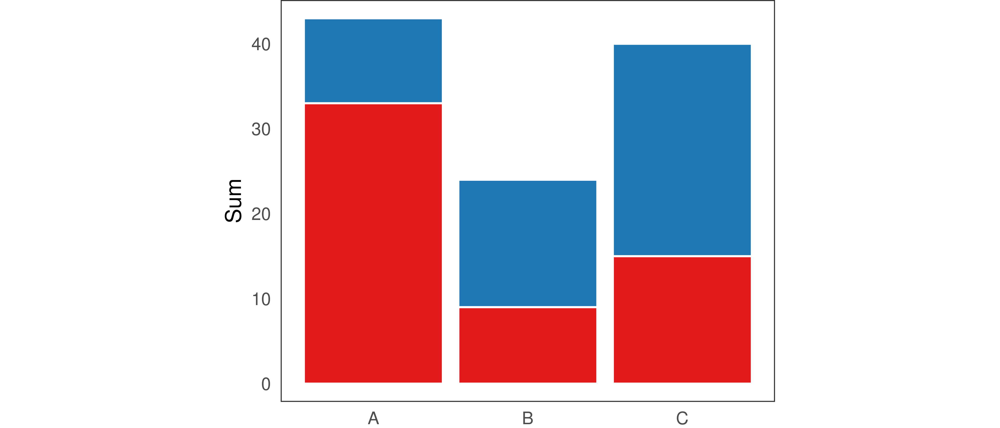

4 System description
This section contains a description of the concrete system implementation (plotscape and plotscaper).
4.1 Components
This section contains a detailed listing of the system’s components.
4.1.1 Indexable
Visualizing data involves .
Indexable is one of the most fundamental types. It has the following signature:
In plain words, Indexable<T> represents a variable-like object that we can use to extract values from by subsetting it with an index. It is meant to be used in combination with a Getter, which provides a uniform interface for extracting these values.
The Indexable type is useful because, while our data will typically come in the form of arrays, we also want the flexibility to be able to work with non-array values such as constants and functions. For example, in a typical barplot, the y-axis base is set to a constant value, typically zero. While we could hypothetically append a new array filled with zeros to the data, it is much more convenient and memory efficient to instead represent the data with a constant (0) or a thunk (() => 0).
4.1.2 Getter
A getter takes an Indexable<T> and returns a function, which, when given an index, returns a value of type T. Here is a slightly simplified implementation:
// Getter.ts
export type Getter<T> = (index: number) => T;
export namespace Getter {
export function of<T>(x: Indexable<T>): Getter<T> {
if (typeof x === `function`) return x;
else if (Array.isArray(x)) return (index: number) => x[index];
else return () => x
}
}we can then create and use Getters like so:
import { Getter } from "./Getter"
const getter1 = Getter.of([1, 2, 3])
const getter2 = Getter.of((index: number) => index - 1);
const getter3 = Getter.of(99);
console.log(getter1(0));
console.log(getter2(0));
console.log(getter3(0));## 1
## -1
## 99Note that, by its type definition, every Getter<T> is also automatically an Indexable<T> (since it is a function (index: number) => T). This means that we can create new getters out of other getters.
The Getter namespace also includes some other utility functions. One example is Getter.constant which takes in a value T and returns a thunk which always returns T (i.e. () => T). This is useful, for example, when T is an array and we always want to return the whole array, not just a single indexed element. Another utility function is Getter.proxy, which takes a Getter and an array of indices, and returns a new Getter which proxies the access to the original values through the array of indices:
import { Getter } from "./Getter"
const proxyGetter = Getter.proxy([`A`, `B`, `C`], [2, 1, 1, 0, 0, 0]);
console.log([0, 1, 2, 3, 4, 5].map(proxyGetter))## [ "C", "B", "B", "A", "A", "A" ]The Getter.proxy function becomes particularly useful when using Factors.
4.1.3 Reactive
Reactive is a fundamental mixin which is used in many parts of the system. It is essentially just an implementation of the Observer pattern with few extra bits.
4.1.4 Dataframe
Another fundamental data structure is a Dataframe. A Dataframe is just a record of Indexable values:
In this way, a Dataframe is essentially just a SoA data structure with a little bit of extra flexibility. Specifically, while in SoA data structures, all properties are typically arrays, in Dataframe they are instances of the Indexable type so they may also be constants or functions. For example, the following is a valid instance of a Dataframe:
const data: Dataframe = {
name: [`foo`, `bar`, `baz`],
age: 99,
canDrive: (index: number) => index < 50
}The fact that the “columns” of a Dataframe can be constants and functions is useful, for example, when want every row to contain the same value (e.g. 0 for the base of a barplot), or when we want the value be lazily computed based on other values. This is also where the SoA representation offers a unique advantage: to achieve the same behavior in AoS layout, we would have to copy the value or function pointer to every row.
Dataframe should always contain at least one array and all arrays in a Dataframe should have the same length. This is necessary to determine the length of the Dataframe (the number of rows). For example, when rendering, we need to know how many objects to draw; as such, at least of one the dataframe’s columns needs to have a fixed length (i.e. have an underlying array).
These fixed-length constraints are not enforced via any static check (such as during a constructor call), but are instead checked dynamically during runtime, whenever the integrity of a dataframe’s length becomes a key concern (using utility functions such as Dataframe.checkLength). This is the case, for example, when initializing a Scene or when rendering.
I found these dynamic fixed-length checks to be the more convenient option. They allow us to represent data as a plain JavaScript object (POJO) rather than having to instantiate a class. Additionally, due to JavaScript’s dynamic nature, this approach is also safer: if, during runtime, the user adds a property to a Dataframe which violates the fixed-length constraints, this approach will catch the error. Finally, for any reasonably-sized data set with typical dimensionality (more rows than columns, \(p << n\)), the tiny performance hit that may be incurred because of having to loop through the columns to find the length dynamically will be minuscule, compared to the cost of looping through the data set’s rows and doing actual work. For high-dimensional datasets (\(p >> n\)), we could always extend the system to memoize the length/number of rows on the Dataframe object (although then we may lose the safety of the dynamic runtime checks).
4.1.5 Factors
Factors provide a way to partition the data into multiple disjoint parts.
4.1.5.1 Product factors
We can combine a factor with \(j\) levels and another factor with \(k\) levels into a product factor with up to \(j \cdot k\) levels.
I independently discovered a formula similar to (Wickham 2013):
\[i_{\text{product}} = i_1 + i_2 \cdot \max(j, k)\]
4.1.6 Reducers
(Gray et al. 1997) came up with OLAP data cube
4.1.7 Scales
To visualize data, we need to be able to translate values from the space of the data to the space of the graphical device (computer screen). In most data visualization systems, this is done by specialized components called scales or coordinate systems. By serving as a bridge between what we have (data) and what we see (visual attributes), scales act as a fundamental building block of all data visualization systems.
There exists is a fair research on the theoretical properties of scales and how they relate to the mechanisms of visual perception (see e.g. Krzywinski 2013; Michell 1986; Wilkinson 2012; Stevens 1946). However, when it comes to applying this knowledge and implementing scales in concrete data visualization systems, only scant information is available. And, even when such information is available, it is it is often quite abstract or high-level (for some rare counter-examples, see e.g. Murrell 2005; Ziemkiewicz and Kosara 2009). Therefore, I thought it could be quite instructive to go into the details of how scales are implemented in my own data visualization system. The following section is based largely on how scales have been implemented in existing data visualization codebases, such as the ggplot2 R package (Wickham 2016) or d3-scale module of D3 (Observable 2024; also used by Vega Satyanarayan et al. 2015), as well as on personal insights gained while implementing the package.
4.1.7.1 Overview
From a high-level perspective, a scale is just a function \(s: D \to V\) which translates values of the data \(d \in D\) to values of some visual attribute \(v \in V\), such as the x- and y-position, length, area, radius, or color (Wilkinson 2012). This function may or may not be invertible, such that, at times, each value of the visual attribute may be identified with a unique data value (but this is not always the case).
One of the most common and typical cases is a scale where both \(D\) and \(V\) are subsets of the real numbers:
\[s: [d_{min}, d_{max}] \to [v_{min}, v_{max}] \qquad d_{min}, d_{max}, v_{min}, v_{max} \in \mathbb{R}\]
For example, suppose our data takes values in the range from 1 to 10 and we want to plot it along the x-axis, within a 800 pixels wide plotting region. Then, our scale is simply:
\[s_x: [1, 10] \to [0, 800]\]
Now, there is an infinite number of functions that fit this signature. However, one particularly nice and simple candidate is the following function:
Definition 4.1 (Simple linear mapping) \[s(d) = v_{max} + \frac{d - d_{min}}{d_{max} - d_{min}} \cdot (v_{max} - v_{min})\]
if we substitute the concrete values into the formula, this becomes:
\[s_x(d) = 0 + \frac{d - 1}{10 - 1} \cdot (800 - 0) = [(d - 1) / 9] \cdot 800\]
The function acts on the data in the following way:
- \(s_x(1) = (1 - 1) / 9 \cdot 800 = 0\)
- \(s_x(10) = (10 - 1) / 9 \cdot 800 = 800\)
- \(s_x(d) \in (0, 800)\) for any \(d \in (1, 10)\)
That is, the function maps the data value 1 to pixel 0 (left border of the plotting region), value 10 to to pixel 800 (right border of the plotting region), and any value in between 1 and 10 inside the interval 0 to 800, proportionally to where in the data range it is located.
It is relatively simple to translate the formula in 4.1 to code:
// simpleScale.ts
export function simpleScale(
d: number,
dmin: number,
dmax: number,
vmin: number,
vmax: number,
): number {
return vmin + ((d - dmin) / (dmax - dmin)) * (vmax - vmin);
}And indeed, this function works the way we would expect:
import { simpleScale } from "./simpleScale.ts"
console.log(simpleScale(1, 1, 10, 0, 800))
console.log(simpleScale(5.5, 1, 10, 0, 800))
console.log(simpleScale(10, 1, 10, 0, 800))## 0
## 400
## 8004.1.7.2 Limits of modeling scales as simple functions
Simple scale functions like the one above can work fine for basic data visualization systems. However, once we begin adding more features, this design becomes prohibitive. Consider, for example, what happens if we want to:
- Expand the scale limits
- Scale discrete data
- Apply non-linear transformations
- Pan, zoom, reverse, reorder, or otherwise modify the scales interactively
Let’s take the first point as a motivating example. Consider what happens to data points at the limits of the data range under the simple linear mapping:
x <- 1:10
y <- rnorm(10, 0, 5)
col <- ifelse(1:10 %in% c(1, 10), "indianred", "grey80")
plot(x, y, col = col, cex = 3, xaxs = "i")
The plot above shows values scaled using the simple linear mapping along the x-axis, i.e. \(s: [1, 10] \to [0, 800]\). Notice that, since the position of the points representing the values 1 and 10 gets mapped to pixel values 0 and 800 (the left and right border of the plot), only half of each point is visible.
To address this, most data visualization systems automatically expand the range of the domain by some pre-specified percentage:
# By default, the plot() automatically expands the x- and y-axis
# limits by approximately 4% on each end, see `xaxs` in ?graphics::par
plot(x, y, col = col, cex = 3)
We could achieve similar effect by modifying the simple linear mapping and adding an additional argument:
// simpleScale2.ts
export function simpleScale2(
d: number,
dmin: number,
dmax: number,
vmin: number,
vmax: number,
exp: number, // Extra argument
): number {
return (
vmin + (exp / 2 + ((d - dmin) / (dmax - dmin)) * (1 - exp)) * (vmax - vmin)
);
}Now, if we set the exp argument to some positive value, the scaled values get mapped closer to the center of the plotting region. For example, setting exp to 0.2 moves each of the data limits 10% closer to the center of the plotting region:
import { simpleScale2 } from "./simpleScale2.ts"
console.log(simpleScale2(1, 1, 10, 0, 800, 0.2));
console.log(simpleScale2(5.5, 1, 10, 0, 800, 0.2));
console.log(simpleScale2(10, 1, 10, 0, 800, 0.2));## 80
## 400
## 720However, notice that this argument is applied symmetrically. At times, we may want to apply a different margin to each end of the scale. We could solve this by adding two arguments instead of one, e.g. expLeft and expRight, however, at this point, the function signature starts to become unwieldy. Also, note that the logic inside the function’s body becomes more complicated. If we have to call the function in multiple places, it may become difficult to remember what the each individual argument represents. Further, we may want to persist or modify some of the arguments during runtime (such as when panning or zooming). Therefore, a more structured approach is required.
4.1.7.3 Solution: Two-component scales
The linear mapping formula in 4.1 can guide us in decomposing the scaling function into smaller, more manageable parts. Let’s look at the formula again:
\[s(d) = v_{min} + \frac{d - d_{min}}{d_{max} - d_{min}} \cdot (v_{max} - v_{min})\]
If we look closely, we may be able to see that the linear mapping is composed of two parts:
\[s(d) = \color{steelblue}{v_{min} +} \color{indianred}{\frac{\color{black}{d} - d_{min}}{d_{max} - d_{min}}} \color{steelblue}{\cdot (v_{max} - v_{min})}\]
That is, the linear mapping is composed of two simpler functions:
- \(\color{indianred}{n(d) = (d - d_{min}) / (d_{max} - d_{min})}\) takes a data value \(d \in D\) and maps it to the interval \([0, 1]\)
- \(\color{steelblue}{u(p) = v_{min} + p \cdot (v_{max} - v_{min})}\) takes a value in \([0, 1]\) and maps it to a visual attribute value \(v \in V\)
This leads us to the following definition of a scale:
Definition 4.2 (Scale as composition of two functions) A scale \(s\) can be created by composing:
- A normalize function \(n: D \to [0, 1]\), mapping data to the interval \([0, 1]\)
- An unnormalize function \(u: [0, 1] \to V\), mapping value in \([0, 1]\) to the visual attribute codomain
Such that:
\[s(d) = u(n(d))\]
For the case of the linear mapping, we could rewrite this in code as follows:
// LinearMap.ts
export namespace LinearMap {
export function normalize(d: number, dmin: number, dmax: number) {
return (d - dmin) / (dmax - dmin);
}
export function unnormalize(p: number, vmin: number, vmax: number) {
return vmin + p * (vmax - vmin);
}
}import { LinearMap } from "./LinearMap.ts"
console.log(LinearMap.normalize(5.5, 1, 10))
console.log(LinearMap.unnormalize(0.5, 0, 800))
console.log(LinearMap.unnormalize(LinearMap.normalize(5.5, 1, 10), 0, 800))## 0.5
## 400
## 400This two component system allows for a clean separation of concerns. Specifically, the normalize function only needs to know how to map the data values to \([0, 1]\). It does not need to be aware of where these normalized data values will be mapped to. Conversely, the unnormalize function only needs to understand how to translate values from \([0, 1]\) to the space of the visual attribute (such as x-axis position).
4.1.7.3.1 Beyond linear maps
One big advantage of the two-component scale system is that the functions \(n\) and \(u\) do not need to be a simple linear maps anymore. For example, suppose that our data \(D\) takes form of a set of discrete labels, such as \(D = \{ Prague, Vienna, Munich, Salzburg \}\). We can then replace \(n\) with a surjective function \(n: D \to [0, 1]\) such that:
\[n(d) = \begin{cases} 0.2 & \text{if } d = Munich \\ 0.4 & \text{if } d = Prague \\ 0.6 & \text{if } d = Salzburg \\ 0.8 & \text{if } d = Vienna \end{cases}\]
In other words, \(n\) will place values of \(D\) at equidistant points along \([0, 1]\), ordered alphabetically. We can implement this function in code as follows:
// PointMap.ts
export namespace PointMap {
export function normalize(d: string, dlabels: string[]) {
return (dlabels.indexOf(d) + 1) / (dlabels.length + 1)
}
}Since the codomain of \(n\) is still \([0, 1]\), we can compose it with a simple linear mapping \(u\) just as easily as before:
import { LinearMap } from "./LinearMap.ts"
import { PointMap } from "./PointMap.ts"
const labels = ["Munich", "Prague", "Salzburg", "Vienna"];
console.log(PointMap.normalize("Munich", labels));
console.log(LinearMap.unnormalize(PointMap.normalize("Munich", labels), 0, 800));
console.log(LinearMap.unnormalize(PointMap.normalize("Prague", labels), 0, 800));## 0.2
## 160
## 3204.1.7.3.2 Inverses
Another benefit of two-component scale system is that, if both \(n\) and \(u\) are invertible, then so is \(s\): we can easily obtain the inverse scale function by inverting the definition from 4.2:
Definition 4.3 (Scale inverse) If a scale \(s\) is composed of invertible functions \(n\) and \(u\), then \(s\) is invertible:
\[s^{-1}(v) = n^{-1}(u^{-1}(v))\]
This is the case for the simple linear map: the normalize and unnormalize functions are actually inverses of each other:
import { LinearMap } from "./LinearMap.ts"
console.log(LinearMap.unnormalize(LinearMap.normalize(300, 0, 500), 0, 500))## 300However, the inverse may not always exist. In practice, this is often the case when the domain of the data \(D\) is smaller than the codomain \([0, 1]\). Take, for example, the discrete point mapping. Since \(D\) is finite but \([0, 1]\) has infinitely many values, there will always be some values in \([0, 1]\) that no \(d \in D\) maps to. For example, if \(D = \{ Munich, Prague, Salzburg, Vienna \}\) and \(Munich\) maps to 0.2, \(Prague\) maps to \(0.4\), and \(Salzburg\) maps to \(0.8\), then there are no cities which map to 0.9, 0.444, or 0.123456789. Conversely, if we get given those numeric values, then there is no obvious way to map them back to the cities.
One thing we can do is to replace the inverse/unnormalize function with a weaker form of inverse, called retraction (Lawvere and Schanuel 2009). Specifically, if we have a normalize function \(n: D \to [0, 1]\), then an unnormalize retraction \(u^*\) will have the property that:
\[u^*(n(d)) = d \qquad \forall d \in D\]
However, the converse doesn’t necessarily hold:
\[\neg \big[ n(u^*(v)) = v \qquad \forall v \in V \big]\]
For example, for the discrete point mapping, a retraction may map a value in \([0, 1]\) to the closest data value \(d \in D\):
// PointMap.ts
export namespace PointMap {
export function normalize(d: string, dlabels: string[]) {
return (dlabels.indexOf(d) + 1) / (dlabels.length + 1)
}
// Retraction - find the closest label
export function unnormalize(p: number, dlabels: string[]) {
const k = Math.round(p * (dlabels.length + 1) - 1)
return dlabels[k]
}
}
const labels = ["Munich", "Prague", "Salzburg", "Vienna"];
const [prague, munich] = ["Prague", "Munich"].map(x => PointMap.normalize(x, labels))
const midpoint = (prague + munich) / 2
// Helper function for stripping away floating point error
const strip = (x: number) => parseFloat(x.toPrecision(12))
console.log(`Midpoint between Munich and Prague: `, strip(midpoint))
console.log(`unnormalize(0.2999): `, PointMap.unnormalize(0.2999, labels))
console.log(`unnormalize(3): `, PointMap.unnormalize(0.3, labels))## Midpoint between Munich and Prague: 0.3
## unnormalize(0.2999): Munich
## unnormalize(3): PragueWhile inverses are always unique (Lawvere and Schanuel 2009; Fong and Spivak 2019), we may be able to come up with many different retractions for any given function. For example, with the discrete point map above, we could use the floor function instead of rounding and assign label to a value in \([0, 1]\) if it is less than the value of the normalized label (but more than the preceding labels).
The non-uniqueness of retractions presents a bit of a dilemma. How do we decide which retraction to use? And, if a certain retractive implementation of unnormalize returns a value, how do we decide if it is the “correct one”?
However, in practice, this is not much of a problem. While developing the package, I found that I’ve only ever had to use the unnormalize function with continuous data (LinearMap), and so the inverse was always well-defined. This is probably also why packages like ggplot2 and D3 can get by without this functionality. However, I still find it helpful to include the unnormalize function as a first class citizen (instead of it being relegated to some special case), both in terms of the mental model and also for debugging.
4.1.7.3.3 Some other remarks about the two-component scale system
It is worth noting that there is nothing inherently special about the interval \([0, 1]\) as the intermediate domain: any finite subset of \(\mathbb{R}\) would do. However, the interval \([0, 1]\) is convenient, both in terms of interpretation as well as for implementation, as we will see later.
Finally, so far I have discussed scales as functions: the scale function, the normalize function, and unnormalize function. Framing scales as composition of functions leads to a nice correspondence between the mathematical definition and the code. However, in practice, it may be more convenient to implement the domain and codomain as objects or classes, as we will also see in the following section. The important point is that, no matter how the two components are represented, each is responsible for translating values from/to its domain and the interval \([0, 1]\).
4.1.7.4 Past implementations of scales
Two-component scale systems are fairly standard across data visualization packages. For example, the D3 library (Bostock, Ogievetsky, and Heer 2011) implements scales in a functional style, with the values representing the data domain and the visual (co)domain being provided as tuples or arrays of values, either during initialization or at some later point. For illustration, here is an example from the oficial documentation (Observable 2024):
const x = d3.scaleLinear([10, 130], [0, 960]);
x(20); // 80
const color = d3.scaleLinear([10, 100], ["brown", "steelblue"]);
color(20); // "rgb(154, 52, 57)"
// The domain and codomain can also be specified separately
const y = d3.scaleLinear().domain([10, 130]); Internally, D3 uses specialized functions to translate from the domain to the codomain (such as the normalize() and scale() functions for continuous and discrete/ordinal domains, respectively, and various interpolate() functions for codomains).
Similarly, in ggplot2 (Wickham 2016), scales are built upon the Scale class, with each subtype implementing limits and palette properties. Similar to D3, the limits property is a vector which corresponds to the data domain and the palette property is a function which corresponds roughly to the visual codomain (the x- and y-position behave slightly differently, due to being passed through coordinate systems). Internally, the package uses the rescale function from the scales package (Wickham, Pedersen, and Seidel 2023) to map data values to \([0, 1]\) and then the palette function is responsible for mapping these normalized values to the visual attribute. For illustration, here’s the full definition of the map method on the ScaleContinuous class (I’ve added comments for clarity):
map = function(self, x, limits = self$get_limits()) {
# Limits are just a tuple, rescale maps x to [0, 1]
x <- self$rescale(self$oob(x, range = limits), limits)
uniq <- unique0(x)
# Palette is a function which returns a vector of attribute values
pal <- self$palette(uniq)
scaled <- pal[match(x, uniq)]
ifelse(!is.na(scaled), scaled, self$na.value)
}4.1.7.5 Proposed model of scales
One feature that the models of scales that D3 and ggplot2 rely on is that they both treat the data domain and the visual attribute codomain as different types. In D3, fundamentally different functions are used to translate from \(D \to [0, 1]\) and from \([0, 1] \to V\), and in ggplot2, limits is a simple vector/tuple whereas palette is a function. While these approaches may have some benefits, such as perhaps offering greater flexibility, they also add additional complexity. Specifically, we have to use two different mental models: one when considering the domain and another when considering the codomain. Further, these models of scales only work in one direction: mapping values \(D \to V\). For going the the other way, i.e. mapping \(V \to D\), other specialized functions have to be used.
I propose a model of scales which implements both the domain and the codomain as components of the same type: Expanse. Fundamentally, this makes it so that the only difference between the data domain and the visual attribute codomain is which property of the scale they are assigned to.
Here is a (slightly) simplified version of the Scale interface:
D and V represent the data domain and the visual attribute codomain, respectively.
The two fundamental functions connected to Scale are:
function pushforward<D, V>(scale: Scale<D, V>, value: ValueOf<D>): ValueOf<V>
function pullback<D, V>(scale: Scale<D, V>, value: ValueOf<V>): ValueOf<D>The pushforward function pushes values forward through the scale, first through its domain and then its codomain, and the pullback function pulls values back, first through its codomain and then through its domain. The ValueOf type helper just identifies the type associated with the expanse’s data (e.g. number for a continuous Expanse, string for a discrete Expanse, etc…). I’ve omitted the generic type parameter constraint (<D extends Expanse, V extends Expanse>) for brevity.
Here is a simplified implementation of the two functions:
namespace Scale {
function pushforward<D, V>(scale: Scale<D, V>, value: ValueOf<D>): ValueOf<V> {
const { domain, codomain } = scale;
return Expanse.unnormalize(codomain, Expanse.normalize(domain, value));
}
function pullback<D, V>(scale: Scale<D, V>, value: ValueOf<V>): ValueOf<D> {
const { domain, codomain } = scale;
return Expanse.unnormalize(domain, Expanse.normalize(codomain, value))
}
}We can see that most of the work is done by the two Expanse components: we use domain to translates \(D \to [0, 1]\) and codomain to translate \([0, 1] \to V\). Scale only serves as plumbing, connecting the two together.
I argue that this model provides several benefits. First of all, it makes the code easier to reason about. Since both the domain and codomain are of the same type, we only need to keep a single mental model of Expanse in mind. Second, if domain and codomain provide inverse functions (unnormalize), we get the inverse scale function \(V \to D\) for free (this is just the pullback function). Finally, there is also some functionalities we can implement on Scale directly, and thus we can keep the interface for Expanse relatively simple. These common functionalities of Scale will be the subject of the next few sections, before we dive into Expanse proper.
4.1.7.5.1 Zero and one
Recall that in Section 4.1.7.2, we ran into the problem of expanding axis limits. We solved the problem by adding an additional argument to the simpleScale function. However, is expanding the axis limits something that we would want to do for continuous scales only?
Clearly, we may want to add margins to axes which do not represent continuous data too, such the the x-axis of a barplot. So, we do not want this functionality to be tied to the scale’s domain (which represents the data). We could add it to the scale’s codomain, however, then we would be breaking with our intention of representing both domain and codomain with the same generic Expanse type. So what can we do?
We can put the functionality for expanding axis limits directly onto Scale. Specifically, notice that any values passing through scale will be first converted to the interval \([0, 1]\) and then back to the space of either the domain or codomain:
\[D \to [0, 1] \to V\]
If we re-normalize these normalized values in \([0, 1]\), we can achieve the result of expanding or shrinking axis limits. As an analogy, if Scale represents the plumbing between the domain and codomain, we can imagine squeezing or stretching the pipe to allow more or less water to flow through.
To actually do this, we can add two additional parameters to Scale, zero and one:
interface Scale<D extends Expanse, V extends Expanse> {
domain: D
codomain: V
props: { // A dictionary of properties
zero: number
one: number
}
}Now, we can implement a new version of the pushforward function:
function pushforward<D, V>(scale: Scale<D, V>, value: D): V {
const { domain, codomain, props } = scale;
const { zero, one } = props
let normalized = Expanse.normalize(domain, value)
normalized = zero + normalized * (one - zero) // Re-normalize
return Expanse.unnormalize(codomain, normalized)
}The function’s body is bit longer than before, however, the only real change is in the line with the comment. We push the normalized value up by the zero property and scale it by (zero - one) range. In other words, we can interpret zero as the proportion of the codomain range that the minimum data value will get mapped to, and one as the proportion of the codomain range that the maximum data value will get mapped to.
Now we can use zero and one to implement margins. For example, by setting zero to 0.1 and one to 0.9, we can implement 10% margins on either side of the scale. That is, we get the same behavior that we did with the exp argument from Section 4.1.7.2. However, we will get this behavior generically, no matter what subtype of Expanse domain and codomain are. Also, we now have the freedom to manipulate each parameter separately (for example, we could specify just the “left” margin by setting zero to 0.1 and one to 1).
However, there is much more we can do with the zero and one than just margins. Firstly, despite the names being a bit suggestive, zero and one can both take values less than zero and more than one. For example, suppose we increment both zero and one by the same amount, e.g. we set zero to 0.1 and one to 1.1. Then, the minimum data value will get mapped to the 10% of the codomain range, and the maximum data value will get mapped to 110% of the codomain range (which may lie outside the space representable by the graphic device). If the codomain represents the x-axis position, then we have shifted all of the geometric objects 10% to the right. We have effectively implemented panning:
function move(scale: Scale, amount: number) {
scale.props.zero += amount;
scale.props.one += amount;
}That’s it. We have implemented a functionality for panning which will work no matter if domain is transforms numbers, strings, or some more complicated data.
We can also stretch or shrink zero and one in opposite directions. For example, by setting zero to -0.5 and one to 1.5, then the minimum and maximum data values will get mapped 50% below and 50% above the limits of the codomain range, respectively (hence, they may both become unrepresentable). Further, the 25 and 75 data percentiles will get mapped to the minimum and maximum of the codomain range. If we apply this to the x- or y-axes, we’ve just implemented zooming
To be perfectly honest, there’s a bit more ceremony involved with zooming. Specifically, if we don’t start from zero = 0 and one = 1 (e.g. if our plot already has margins or if we’re zooming in multiple levels deep), then we need to re-normalize within these values. This took me a bit of time to nail down, however, it’s just (highschool) algebra:
function rangeInverse(min: number, max: number) {
return 1 / (max - min);
}
function invertRange(min: number, max: number) {
const ri = rangeInverse(min, max);
return [-min * ri, ri - min * ri];
}
namespace Scale {
export function expand(
scale: { props: { zero: number; one: number } },
zero: number,
one: number
) {
const { zero: currentZero, one: currentOne } = scale.props;
const currentRange = currentOne - currentZero;
// Re-normalize within current values
zero = (zero - currentZero) / currentRange;
one = (one - currentZero) / currentRange;
// Invert
[zero, one] = invertRange(zero, one);
scale.props.zero = zero;
scale.props.one = one;
}
}
const scale1 = { props: { zero: 0, one: 1 } }; // Mock of default scale
const scale2 = { props: { zero: 0.1, one: 0.9 } }; // Mock of scale with margins
// Zoom into the middle 50% of either scale
Scale.expand(scale1, 0.25, 0.75);
Scale.expand(scale2, 0.25, 0.75);
console.log(`Zoomed in scale with no margins`, scale1.props);
console.log(`Zoomed in scale with 10% margins`, scale2.props);## Zoomed in scale with no margins {
## zero: -0.5,
## one: 1.5,
## }
## Zoomed in scale with 10% margins {
## zero: -0.3,
## one: 1.3,
## }As you can see, zooming into the middle 50% of a scale that already includes margins has a smaller effect on zero and one, since the margins have effectively expand the space we’re zooming into (i.e., a scale with margins is already zoomed out, in a way).
4.1.7.5.2 Direction
In the same way we can think about expanding/shrinking axis limits in a way that is not coupled to any particular data representation or visual attribute, it may also be helpful to make direction a property of Scale rather than either of the Expanse components.
We could do this by manipulating the zero and one properties. For example, by setting zero to 1 and one to 0, we could effectively reverse the direction of the scale. However, in practice, this would complicate our logic and make it harder for someone to interpret the Scale properties. It is a better idea to add an explicit direction parameter instead:
interface Scale<D extends Expanse, V extends Expanse> {
domain: D
codomain: V
props: {
zero: number
one: number
direction: 1 | -1 // Extra parameter
}
}Like with zero and one, direction acts on the normalized values in \([0, 1]\). This means that we need to apply it in any transformations that use these values. For example, here’s an updated version of the move function:
export function move(scale: Scale, amount: number) {
let { direction, zero, one } = scale.props;
zero += direction * amount;
one += direction * amount;
}Likewise, the pushforward, pullback, and expand functions also need to take direction into account. Either way, with this functionality in place, it becomes trivial to flip or reverse a scale:
4.1.7.5.3 Multipliers
Finally, it may also be helpful to have the ability to shrink/expand the normalized values by some constant without having to modify properties of either the domain or codomain. Again, this could be done by using the zero and one properties, however, it’s better to define explicit properties instead. Specifically, we can add two additional parameters:
interface Scale<D extends Expanse, V extends Expanse> {
domain: D
codomain: V
props: {
zero: number
one: number
direction: 1 | -1
scale: number // Extra parameter
mult: number // And another one
}
}The reason why we want two multiplier parameters instead of just a single one is that there are different reasons for why we may want to multiply values by some constant. Firstly, we may want to multiply the values by some constant value that remains static throughout the lifetime of the program/visualization. That is the job of the scale parameter. Conversely, we may want to also dynamically manipulate the constant by which the values are multiplied. That is what mult is for. Having two multipliers makes it easier to reason about the scale’s behavior, as well as to apply changes such as restoring to defaults.
A good example of this is the barplot. In a typical barplot, all bars have the same width, and this bar width is some fraction of the width of the entire plotting region. Clearly, this fraction needs to depend on the number of bars in the plot, such that, with \(k\) categories/bars, the bar width will be proportional to \(k\). However, we may also want to be able to make the bars wider/narrower interactively, e.g. by pressing the +\- keys. Thus, the width of the bars is proportional to \(c \cdot k\) where \(k\) is the static part of the constant (scale) and \(c\) is the dynamic part of the constant (mult).
We apply the constant to the normalized value each time we push/pull a value through a scale:
// This will be included in the body of pushforward(); see below for full example
let normalized = Expanse.normalize(domain, value)
normalized = normalized * scale * multFinally, we could hypothetically extend this idea of multipliers further and have an entire array of different multipliers, that would be reduced into a single constant each time we pushed a value through a scale. However, I found that having two, scale and mult, was enough to solve all of my scaling problems. Additionally, having an array of multipliers might make the scaling functions slightly less performant, if we have to reduce the array each time we pushforward/pullback, or it might make keeping track of the state of the Scale object slightly more complicated, if we roll these multipliers into one constant each time we update the array. We also lose the semantic distinction that we have with scale and mult. This might be a perfectly fine trade-off if our scales require more multipliers, however, I did not find this to be the case in my implementation.
4.1.7.5.4 The Full Monty
With all of the pieces in place, we can put together the full implementation of the pushforward function.
It may be helpful to define two helper function for applying the Scale properties to a normalized value. First, the applyDirection function simply applies the direction property, such that applyDirection(x, 1) is simply the identity whereas applyDirection(x, -1) returns 1 - x (i.e. moving from one down):
function applyDirection(x: number, direction: 1 | -1) {
return 0.5 * (1 - direction) + direction * x;
}
console.log(applyDirection(0.75, 1))
console.log(applyDirection(0.75, -1))
console.log(applyDirection(1.25, -1))## 0.75
## 0.25
## -0.25Second, we can define the applyPropsForward function which takes a normalized value and applies all of the Scale properties to it:
type Props = {
zero: number;
one: number;
direction: -1 | 1;
scale: number;
mult: number;
};
function applyPropsForward(x: number, props: Props) {
const { zero, one, direction, scale, mult } = props;
x = x * scale * mult;
x = zero + x * (one - zero);
return applyDirection(x, direction);
}Now we ready to define the full pushforward function. As one final note, we should probably be able to handle the case where the domain and codomain work on arrays of values rather than scalars (this can be helpful, for example, in the case of a parallel coordinates plot). As such, we can add an if block to check where the normalized value is an array and handle appropriately. In total:
function pushforward<T extends Expanse, U extends Expanse>(
scale: Scale<T, U>,
value: Expanse.Value<T>,
): Expanse.Value<U> {
const { domain, codomain, props } = scale;
let normalized = Expanse.normalize(domain, value);
if (Array.isArray(normalized)) {
normalized = normalized.map((x) => applyPropsForward(x, props));
} else {
normalized = applyPropsForward(normalized, props);
}
return Expanse.unnormalize(codomain, normalized);
}This is the full definition of the pushforward function in plotscape as of 2024-10-17. The implementation for pullback function is very similar, with the only differences being that the order of the domain and codomain arguments reversed, and it uses the applyPropsBackward function.
4.1.8 Expanses
As was hinted at in the previous section, expanses map values between their domain and the interval \([0, 1]\). To do this, they are equipped with two familiar functions:
- A normalize function \(\color{indianred}{n: X \to [0, 1]}\)
- An unnormalize function \(\color{steelblue}{u: [0, 1] \to X}\)
foo
Or, in code:
function normalize<X>(expanse: Expanse<X>, value: X): number
function unnnormalize<X>(expanse: Expanse<X>, value: number): XNotice that, whereas before we had considered normalize as mapping between \(D \to [0, 1]\) and unnormalize as mapping between \([0, 1] \to V\), we now consider both as mapping between \([0, 1]\) and an arbitrary domain \(X\). This domain can represent the data or the visual attribute - the expanse is agnostic about this.
Also, while before we have discussed domains as subsets of \(\mathbb{R}\), we can now start thinking about them as arbitrary sets. While subsets of \(\mathbb{R}\) and sets of strings are really the only types of domains used in plotscaper, the model should readily extends to other sets, as long as a mapping to and from \([0, 1]\) can be provided.
How normalize and unnormalize are implemented will depend largely on the subtype of Expanse, as well as on the desired behavior. For example, as will be discussed later, in plotscaper, the normalize and unnormalize methods implemented for ExpanseContinuous (subtype of Expanse<number>) work largely the same way as in section [SECTION]. However, while ExpansePoint and ExpanseBand are both subtypes of Expanse<string>, they behave differently - ExpansePoint maps strings (factor levels) to equidistant points along \([0, 1]\), whereas ExpanseBand maps the strings into the middle of “buckets” along \([0, 1]\).
However, there is also some behavior that we may want to apply the same way across the different expanse subtypes. For example, it seems reasonable that the user should be able to zoom, pan, or reverse axes, regardless of whether a plot shows discrete or continuous data. As such, there may be some properties and functions common to the Expanse type. I will discuss these first.
4.1.8.1 Zero and one
The maps may also take in and return values outside of \(D^*\) and \([0, 1]\), if adjustments have been made. For instance, in most data visualization packages, x- and y-axis limits are by default expanded some percentage beyond the range of the observed data to avoid the maximum and minimum datapoints from overlapping with the limits. For example, in base R:
set.seed(12345)
x <- rnorm(5)
y <- rnorm(5)
par(mfrow = c(1, 2))
plot(x, y)
plot(x, y, xaxs = 'i', yaxs = 'i')
Figure 4.1: Expanding axes. By default, axes in base R plot() function are expanded 4% beyond the range of the data (left). Otherwise, datapoints on the limits of their respective scales end up overlapping with the plot borders (right).
Thus, upon normalizing the minimum and maximum data values, the expanse should return values other than \(\{0, 1\}\). Likewise, to support user interactions such as zooming and panning, the expanses may accept and return values outside of \(D^*\) and \([0, 1]\).
Zooming and panning should be orthogonal to the underlying data type, such that user can interact with the plots the same way1, no matter whether their axes are continuous, discrete, or some combination of the two. To this end, I introduce two parameters representing the normalized value (\(p\)) of the minimum and maximum data point, called zero and one respectively. These parameters are agnostic to the underlying data type, such that if we have the data type-specific maps \(n'\) and \(u'\), the complete normalize and unnormalize maps are:
\[n(d) = \text{zero} + n'(d) \cdot (\text{one} - \text{zero})\] \[u(p) = u' \bigg(\frac{p - \text{zero}}{\text{one} - \text{zero}} \bigg)\]
To simplify, here’s what effect setting the two parameters to specific values has:
| Zero | One | Effect |
|---|---|---|
| 0.05 | 0.95 | Expands the margins by ~5% (actually 5.555…% since 0.05 / 0.9 = 0.0555…) |
| 0.05 | 1.05 | Shifts the expanse ‘up’ by 5% (e.g. moves x-axis 5% right) |
| -0.50 | 1.50 | Zooms into the middle 50% of the expanse (25 percentile goes to 0 and 75th to one) |
4.1.8.2 Expanse Interface
There are also other behaviours that expanses should support. For instance, we may want to be able to reset the expanse to defaults, retrain when the underlying data changes, and return nicely formatted breaks. How these behaviours are implemented, as well as other types of behavior, may be specific to the underlying data type. Overall, expanse interface may look something like this:
interface Expanse<T> {
normalize(value: T): number
unnormalize(value: number): T
defaultize(): this
setZero(zero: number, default: boolean): this
setOne(one: number, default: boolean): this
freezeZero(): this
freezeOne(): this
move(amount: number): this
expand(zero: number, one: number): this
retrain(values: T[]): this
breaks(n?: number): T[]
}4.1.8.3 Continuous Expanses
The continuous expanse has as its underlying set \([\min, \max] \subseteq \mathbb{R}\). To understand how it works, let’s build it step by step.
We start with the basic normalizing function:
- \[n(d) = \frac{d - \min}{\max - \min}\]
This function takes some data value \(d \in [\min, \max]\) and transforms it to \([0, 1]\). Most data visualization systems use a function like this at some step of the scaling processs - see scales::rescale and D3 normalize.
This may work well for typical linear scales. However, we may also want to apply some transformation \(f\), such as square root or log. Then, to ensure that the observed data values still get normalized to \([0, 1]\), we need to apply the transformation to both \(d\) and the limits:
- \[\frac{f(d) - f(\min)}{f(\max) - f(\min)}\]
Finally, as was discussed in EXPANSES, we want to be able to incorporate the zero and one paramaters, leading to the final normalizing function:
\[n(d) = \text{zero} + \frac{f(d) - f(\min)}{f(\max) - f(\min)} \cdot (\text{zero} - \text{one})\]
To obtain the unnormalizing function, we can simply invert the normalizing function:
\[u(p) = f^{-1} \bigg\{ f(\min) + \frac{p - \text{zero}}{\text{one} - \text{zero}} \cdot \big[ f(\max) - f(\min) \big] \bigg\}\]
The function transforms \(x\) to a percentage value \(p \in [0, 1]\), provided \(x\) is within \([\min, \max]\). The value \((\max - \min)\) is also sometimes called the range (not to be confused with D3 range).
We can invert the normalizing function and obtain the unnormalizing function, which is, for some percentage \(p \in [0, 1]\):
\[u(p) = \min + p \cdot (\max - \min)\] returns a value within the \([\min, \max]\) range, corresponding to the proportion of the maximum possible distance (range) from the origin (\(\min\)). For example, \(u(0.5)\), returns a value that is located halfway between the limits.
We can implement a simple continuous expanse like so:
function identity<T>(x: T) {
return x;
}
function expanseContinuous(min = 0, max = 1) {
const [zero, one] = [0, 1]
const [trans, inv] = [identity, identity]
return { min, max, zero, one, trans, inv,
range() {
return this.max - this.min;
},
transRange() {
const { min, max, trans } = this;
return trans(max) - trans(min);
},
normalize(x: number) {
const { min, zero, one, trans } = this;
const normalized = (trans(x) - trans(min)) / this.transRange();
return zero + normalized * (one - zero);
},
unnormalize(p: number) {
const { min, zero, one, trans, inv } = this;
return inv(trans(min) + ((p - zero) / (one - zero)) * this.transRange());
},
};
}
const expanse1 = expanseContinuous(1, 10);
console.log(expanse1.normalize(5));
console.log(expanse1.unnormalize(0.5))## 0.4444444444444444
## 5.5The functions \(n, u\) have several interesting properties. First off, they are inverses to each other and form an isomorphism, i.e. \(u = n^{-1}\) and \(n = u^{-1}\) such that \(u(n(x)) = x\) and \(n(u(p)) = p\). This also means that each function is a 1-to-1 mapping or bijection. In plain words, this means that we cannot get the same percentage by normalizing two different values and vice versa. As a result, we can keep switching between the normalized and unnormalized representations without losing any information:
4.1.8.3.1 Linearity
Another important thing to note is that, while these types of normalizing functions are often called “linear” (e.g. scaleLinear() in D3), since their graphs form a straight line, they should not be confused with “linear functions”, since they do not satisfy the properties of linear functions, namely:
- Additivity: \(\text{normalize}(x + c) \neq \text{normalize}(x) + \text{normalize}(c)\)
- Homogeneity of degree 1: \(\text{normalize}(c \cdot x) \neq c \cdot \text{normalize(x)}\).
To illustrate, additivity does not hold when \(\min \neq 0\) because:
\[\frac{(x + c) - \min}{(\max - \min)}\] \[= \frac{x - \min}{\max - \min} + \frac{c}{\max - \min}\] \[\neq \frac{x - \min}{\max - min} + \frac{c - \min}{\max - \min}\]
The same can be easily shown for the \(\text{unnormalize}\) map and for homogeneity.
Technically, this is due to a confusion between the definition of a “linear function” and a “linear polynomial”. The appropriate term to use would actually be “affine transformation.”
Either way, if the minimum is not 0, we cannot expect the following to be equal:
Or the following to be equal:
However, if we keep in mind the fact that the normalizing function calculates the proportion of distance from the origin, we can see that the function in fact behaves linearly within the context of its limits.
For example, consider the range \([1, 10]\). The value \(5\) is \(4\) units away from the lower limit, i.e. \(5 - 1 = 4\), so we can represent it, for example, as the sum of a value that is 3 units away and another that is one unit away, \(n(5) = n(4) + n(2)\):
Likewise, again because \(5\) represents the distance of \(4\) units and \(3\) of \(2\), we can expect \(n(5) = 2 \cdot n(3)\):
4.1.8.3.2 Transformations
We can apply transformations to continuous expanses by transforming their limits. The outcome of this is that \(\min\) and \(\max\) still get mapped to \(0\) and \(1\) however, the graph of the function is no longer linear. Suppose we have non-linear function \(f\), along with an inverse \(f^{-1}\). Then:
\[n(x) = \frac{f(x) - f(\min)}{f(\max) - f(\min)}\] \[u(p) = f^{-1} \bigg\{f(\min) + p \cdot \big[ f(\max) - f(\min) \big] \bigg\}\] For example, here’s how we could apply the transformation \(\bigg( f(x) = \sqrt{x}, \; f^{-1}(x) = x^2 \bigg)\) in code:
Transformations such as these can be useful in two ways. First, sometimes we may be able to better see trends in the data when the data has been appropriately transformed. This is the case, for example, when plotting data which varies across orders of magnitude. In this case it may be useful to apply \(\log\)-transformation. Second, transformations can also be helpful in situations where some graphical attributes are not perceived linearly. For example, when judging differently sized objects, viewers tend judge magnitude based on area rather than side or radius. As such, when drawing objects such as points or squares it can be helpful to apply square root as the inverse transformation. The idea is that, if one point has a data value that is \(c\) times bigger than another, it will have \(\sqrt{c}\) times bigger radius and \(c\) times bigger area. Note that we are talking about the inverse transformation here, i.e. the transformation affecting the unnormalizing function.
One thing to note is that the proportionality of the square-root transformation holds only when \(\min = 0\). Otherwise:
\[\sqrt{(\min)^2 + cp \cdot [(\max)^2 - (\min)^2]}\] \[= \sqrt{c} \cdot \sqrt{(\min)^2/c + p \cdot [(\max)^2 - (\min)^2]}\] \[\neq \sqrt{c} \cdot \sqrt{(\min)^2 + p \cdot [(\max)^2 - (\min)^2]}\]
This is a problem in the existing packages. For example:
4.2
References
The one exception may be panning barplots and histograms, where the y-axis upper y-axis limit may change but the lower should be fixed at 0, such that panning may shrink or stretch the bars, but not “lift” them up or move them down.↩︎